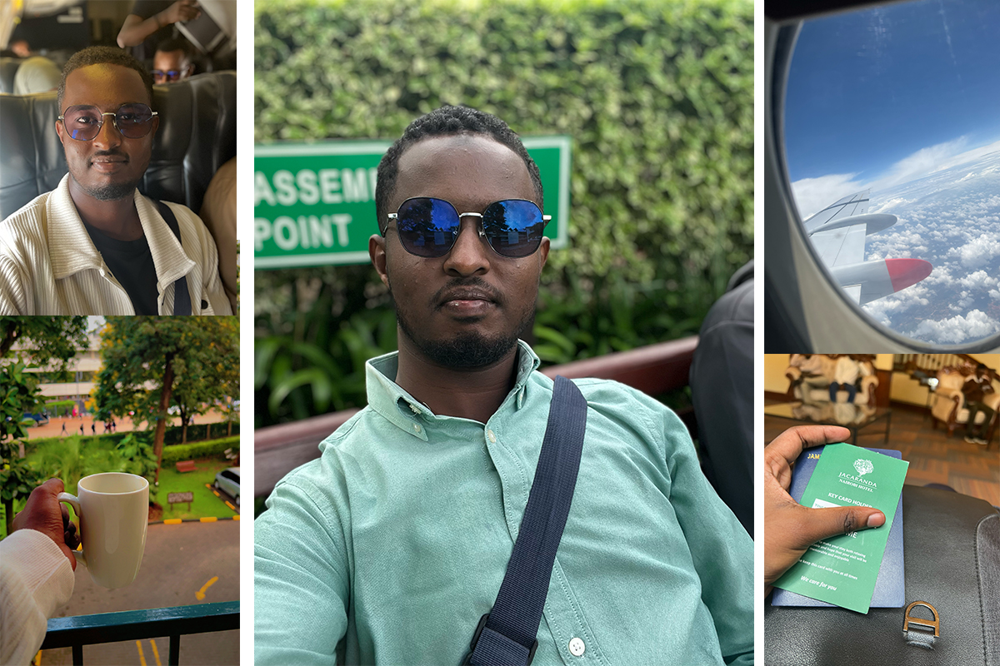
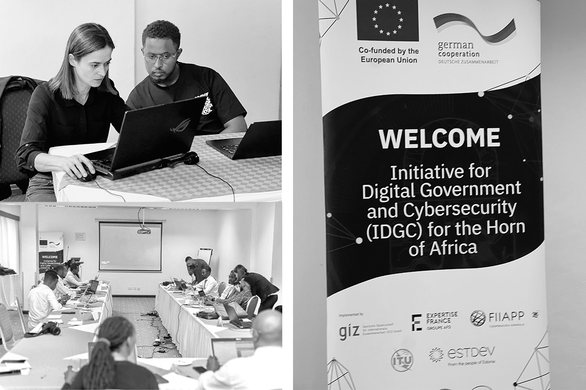
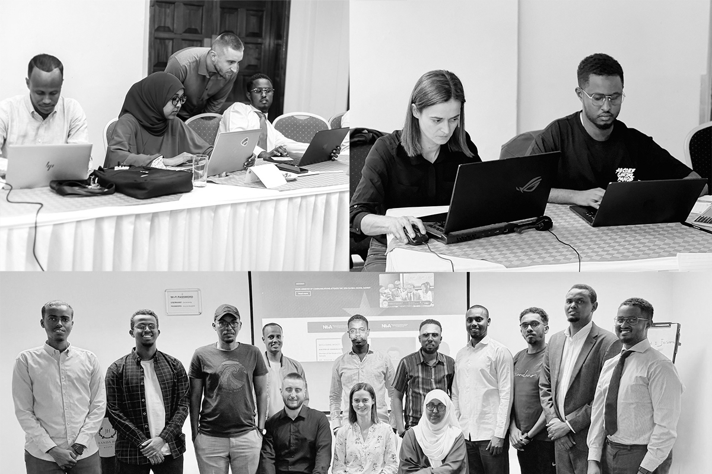
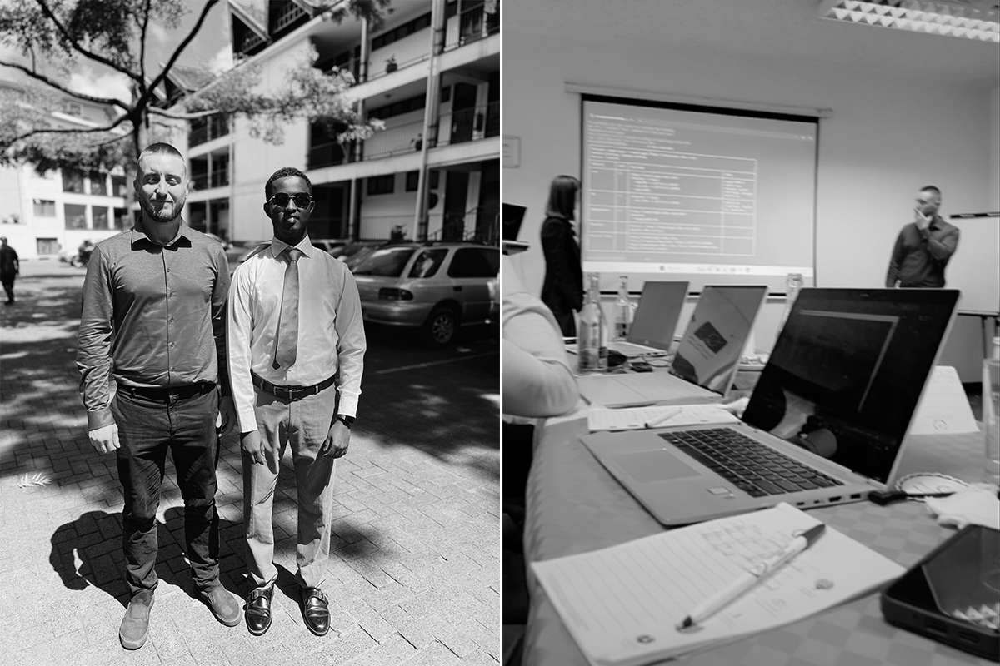

My First Trip to Kenya: Capacity Building & Connections
A first hand experience of exploring Nairobi, joining the Somalia TYPO3 Training Workshop, and discovering the role of technology in shaping digital governance across the Horn of Africa.
On April 6th, 2025, I set off on my very first trip to Kenya for a capacity building workshop. Honestly, before this journey, I never really understood why people were so passionate about traveling. But after this experience i think i get it now, and maybe I’ve even caught the travel bug myself.
After a few hours in the air, our plane touched down at Jomo Kenyatta International Airport (NBO) at 11:45 AM. The moment I stepped outside, I was struck by the cool, fresh air. It was raining lightly, and the weather felt absolutely refreshing, so different from what I was used to.
We checked into Jacaranda Hotel in Westlands, a green and peaceful spot. No exaggeration, the hospitality there was 10/10. Friendly staff, good service, and a really relaxing environment.
That evening, around 8:30 PM, my brother called me, and I decided to go see Eastleigh. If you’ve ever been there, you’ll know why people call it “Little Mogadishu.” It’s full of life, business, and Somali culture. Honestly, it felt exactly like being in Bakaro Market 😂. I stayed there until 1:00 AM, meeting new people who couldn’t believe I had only been in Nairobi for a few hours. And the highlight? I tried chapati with chicken for the first time. I had always heard about it, but this was my first taste and wow, it was so good.
The TYPO3 Training Workshop
The next day marked the start of what brought me to Kenya: the TYPO3 Training Workshop. Held from April 7–11, 2025, in Nairobi, this workshop was part of the Initiative for Digital Government and Cybersecurity (IDGC) a regional effort aimed at strengthening digital governance and cybersecurity across the Horn of Africa.
For context, TYPO3 is an open source CMS used to build
websites. But this workshop wasn’t just theory, it was
very hands-on. Over five days, we actually built a full
E-Government website for Somalia from scratch. What I
loved most was the interactive style. Whenever someone
discovered or built something new, they would step up to
the stage and explain it to everyone. It kept the learning
lively and collaborative.

Our mentors had over 20 years of experience in digital
governance and tech. Learning directly from them was a
huge privilege. The participants came from Somalia, Kenya,
and partners like GIZ and ITU. Beyond the technical side,
I met and connected with amazing people from Somali
colleagues in the Ministry of Communication and Technology
to international experts. Those connections alone made the
trip unforgettable.
What I Took Away
Looking back, this trip was so much more than a training
program. It was my very first international experience
filled with new discoveries, friendships, and growth. From
wandering the streets of Eastleigh to building digital
solutions in the workshop, every moment gave me something
meaningful.
More importantly, it opened my eyes to how vital digital
governance is for Somalia’s future. Being part of creating
an actual E-Government platform showed me how technology
can transform governance, improve public services, and
connect people in powerful ways.
Sometimes, the only way to understand the magic of travel is to just go. For me, Kenya wasn’t just a trip, it was the start of a new perspective on traveling, learning, and the role of technology in shaping the future.

Tags
Let’s Bring Your Ideas to Life!
Get in touch, and we’ll turn your vision into reality I’m open to full-time or part-time opportunities to create innovative designs and deliver outstanding results.